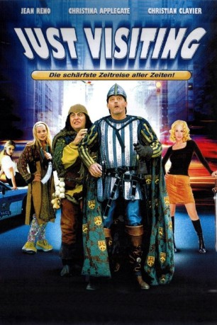
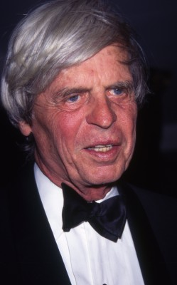
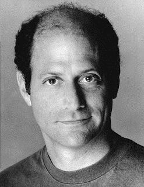

#5858 Just Visiting - Mit Vollgas in die Zukunft
Alternativ: Just Visiting
 
 IMDB-Wertung: 5.8 / 10
IMDB-Wertung: 5.8 / 10  Metascore: 0
Metascore: 0 
Irgendwann im dunklen Mittelalter. Thibault Malfete und sein treuer Knappe André schreiten zur Hochzeit Malfetes mit der lieblichen Lady Rosalind. Doch ein heimtückischer Nebenbuhler Malfetes gönnt dem Grafen sein Glück offensichtlich nicht: Ein Gifttrank wird gemischt, um die ungewünschte Hochzeit zu verhindern - doch danach ist die schöne Lady Rosalind tot, Thibault Malfete lebt. Der Hof-Magier wird zu Rate gezogen, Malfete möchte das grausige Geschehen ungeschehen machen und ein paar Minuten in die Vergangenheit zurückreisen, um rechtzeitig eingreifen zu können. Doch der vertrottelte Magier mischt leider anstelle des Rückwärtstranks den Vorwärtstrank: Unverhofft landen Graf und Knappe im heutigen Chicago und treffen auf Julia Malfete, eine Nachfahrin des Grafen. Die beiden mittelalterlichen Zeitreisenden staunen nicht schlecht angesichts des 21. Jahrhunderts, doch tatkräftig und unerschrocken werden sie sich ins moderne Leben!
Jahr: 2001
Dauer: 89 Minuten
FSK: 6
Land: Frankreich Studio: Highlight FilmTonspuren:
Untertitel:
Auflösung: SD (704x304) Größe: 1402 MB
Genre: Sci-Fi, Komödie, Fantasy
Regisseur: Jean-Marie Poiré
Drehbuch: Chung-Ping Wang
Soundtrack:
Darsteller:
 Jean Reno als Thibault
Jean Reno als Thibault Christina Applegate als Rosalind / Julia
Christina Applegate als Rosalind / Julia Christian Clavier als Andre
Christian Clavier als Andre Matt Ross als Hunter
Matt Ross als Hunter Tara Reid als Angelique
Tara Reid als Angelique- Bridgette Wilson-Sampras als Amber
 John Aylward als Byron
John Aylward als Byron-  George Plimpton als Dr. Brady
 Malcolm McDowell als Wizard
Malcolm McDowell als Wizard- Cliff Barry als Museum Guard
 Richard Bremmer als King Henry
Richard Bremmer als King Henry Lorenzo Clemons als Squad Chief
Lorenzo Clemons als Squad Chief Oliver Ford Davies als Pit Rivers
Oliver Ford Davies als Pit Rivers- Ross Gibby als Museum Teacher
- Robert Glenister als Earl of Warwick
 Danny Goldring als Bartender
Danny Goldring als Bartender- Valerie Griffiths als Hag
- Michelle Hurst als Pawnshop Broker
-  Eric Meyers als Family Man
- Larry Neumann Jr. als Hot Dog Vendor
- Suzanne Petri als Patsy the Drunk
 Molly Price als Teacher
Molly Price als Teacher Ric Sarabia als Priest
Ric Sarabia als Priest- Adam Shaw als Kitchen Worker
- Rebekah Nanfria als Bystander #3
- Robert Steinman als Car Driver
- Kevin Theis als Cop O'Malley
- Ellie Weingardt als Barfly #4
- Carl Wright als Station Master
- Andrew Elias als King Henry's Guard , uncredited
- Mark Finney als Dancer , uncredited
- Greg Fitzpatrick als Assistant Director , uncredited
 Kelsey Grammer als Narrator , uncredited
Kelsey Grammer als Narrator , uncredited- Wendy Johnson als Script Supervisor , uncredited
- Suyun Kim als Annoying Dancer , uncredited
 Maureen Mendoza als Bartender / Club goer , uncredited
Maureen Mendoza als Bartender / Club goer , uncredited- Lou Meza als Stiff , uncredited
- Eric Scott Gould als Cinematographer , uncredited
- Mike Sode als Nightclub Dancer , uncredited
- Sophia Thomas als Congo Dancer , uncredited
- Martin Aistrope als Barfly #3
- Naomi Armstrong als Bystander #2
- Eric Aviles als Purse Snatcher
- Sarah Badel als Queen
- Bill Bailey als Thibault's Father
- Tab Baker als Cabbie
- Doug Barron als Reed Sikes
- Janette Bickerton als Screaming Peasant Woman
- Lucy Blair als Thibault's Sister #2
- William Bookston als Peasant
Datei: X:\4-Tetralogie(A-K)\Besucher - Zeitritter\Just Visiting - Mit Vollgas in die Zukunft (2001, FSK6, 704x304).avi seit 30.03.2017
Festplatte: HD Collection-3(N-Z)-6(A-Z)
 Es gibt insgesamt 7 Filme in der Gruppe '4-Tetralogie(A-K)\Besucher - Zeitritter'
Es gibt insgesamt 7 Filme in der Gruppe '4-Tetralogie(A-K)\Besucher - Zeitritter'